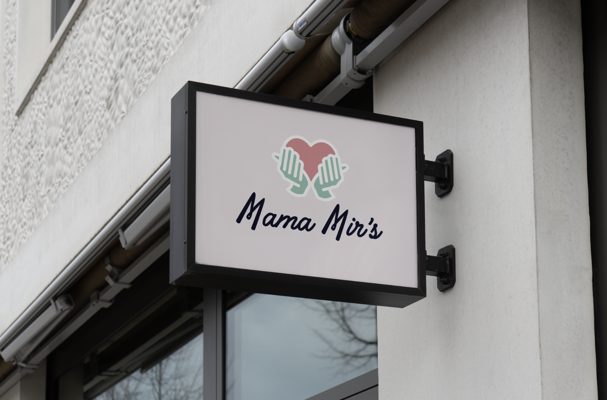
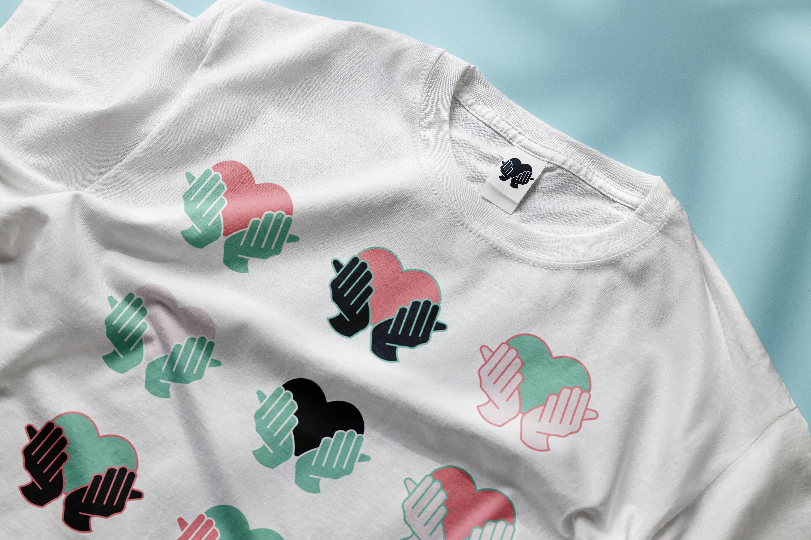
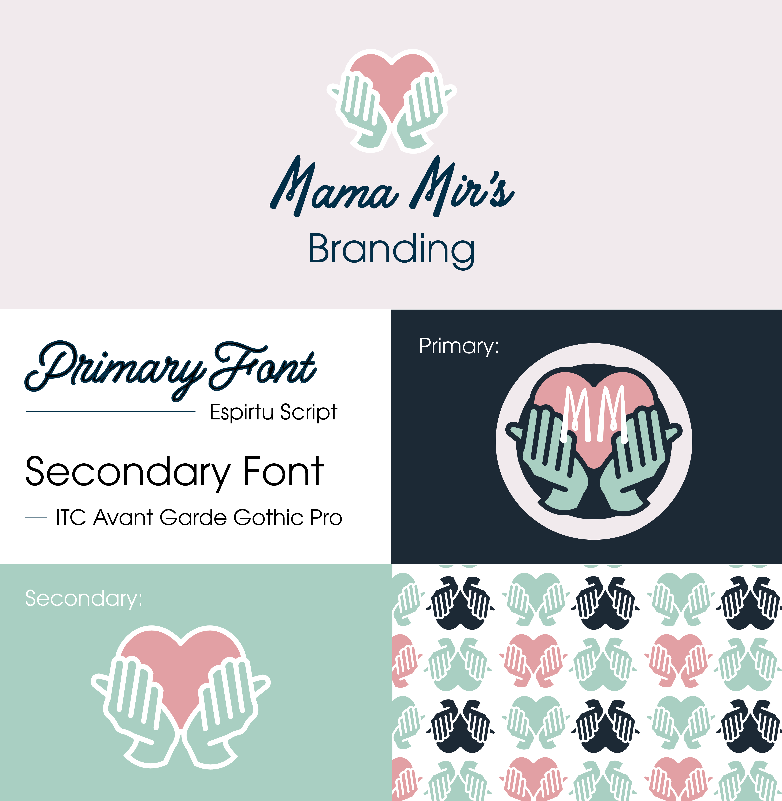
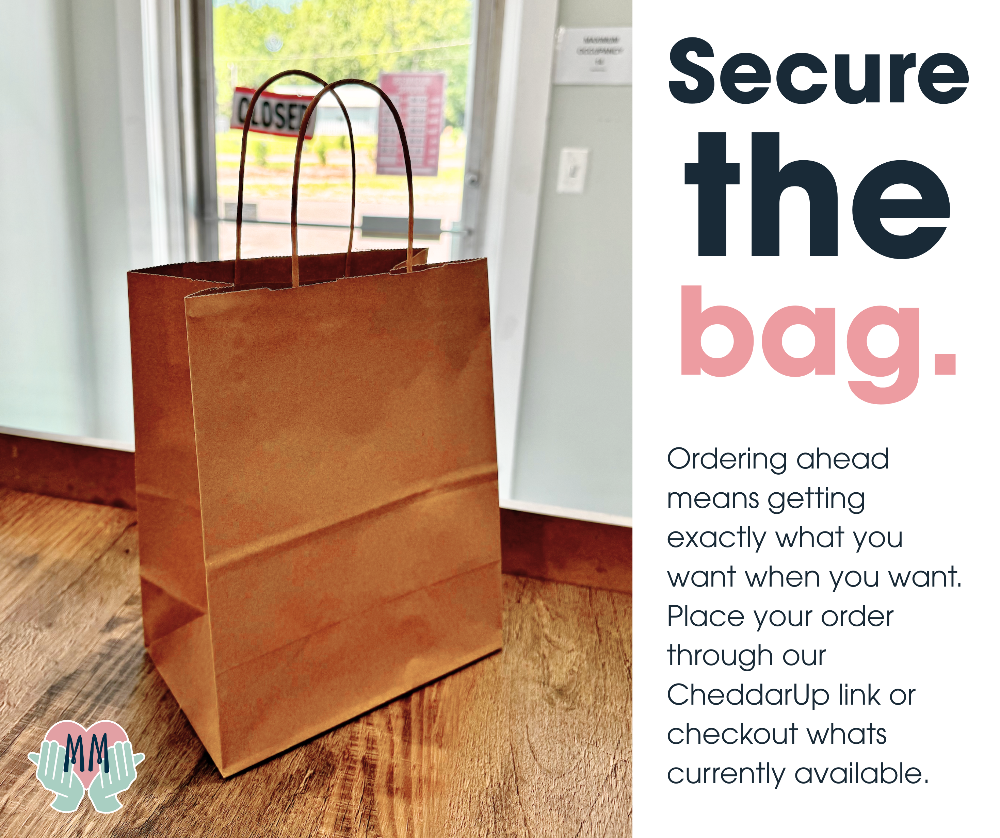
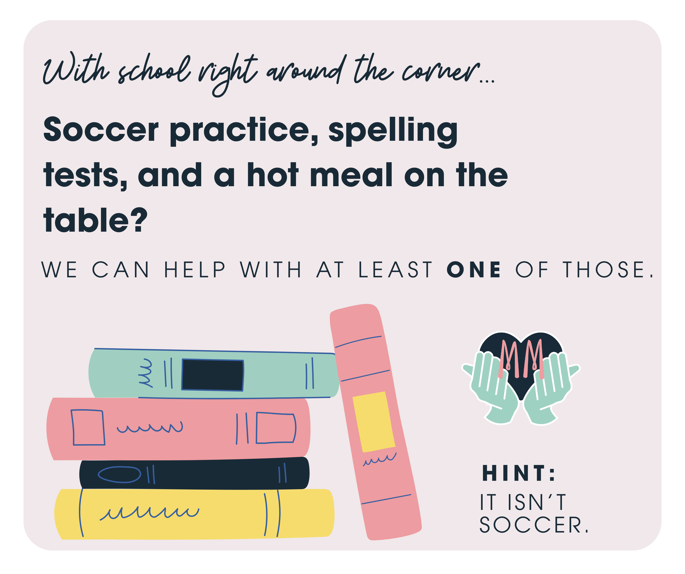
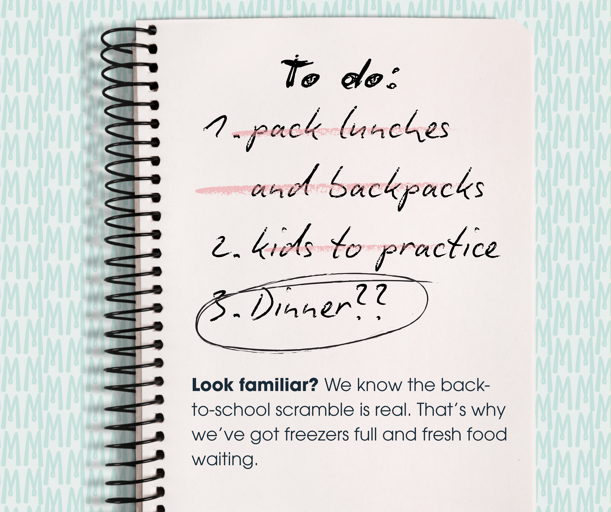
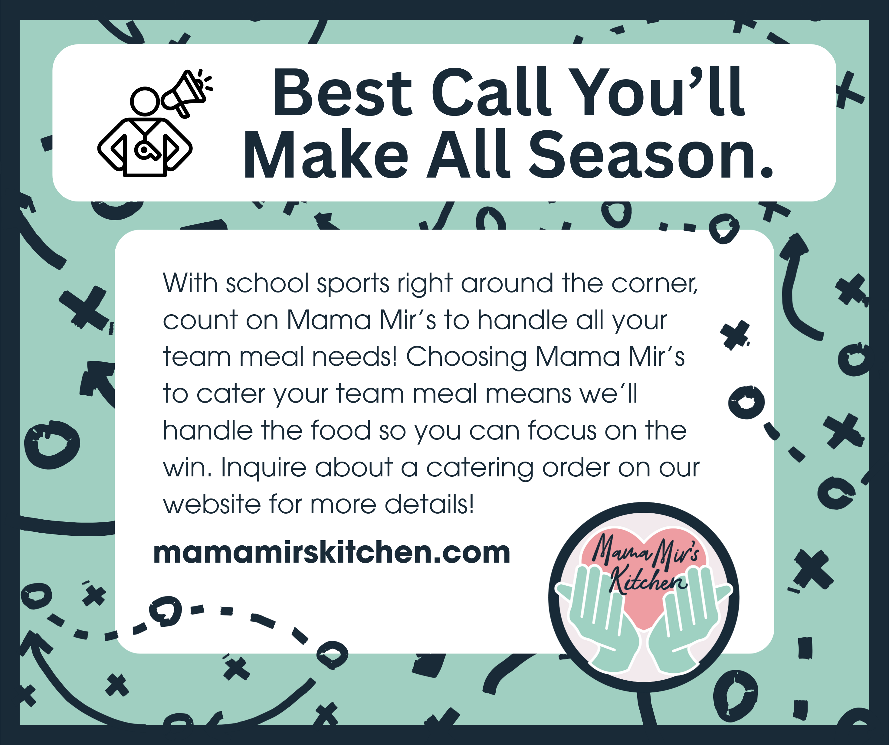
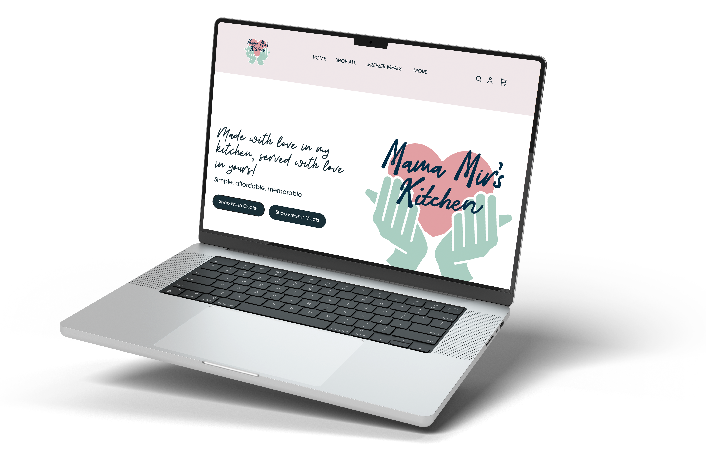
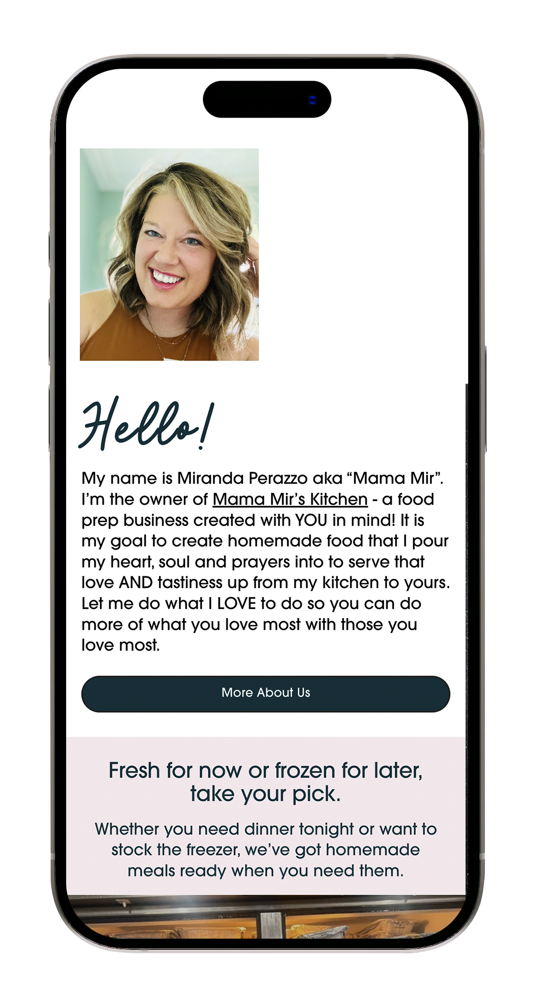

Mama Mir's Branding
I had the opportunty to provide graphic design services to a local business called Mama Mir’s. The kitchen sold family-style meals, fresh or frozen. The business also offered catering and space to rent for events.
Mama Mir's is very service based and 100% of the food is made by hand. The business has been providing for Napoleon, Ohio since the business owner sold meals from her home during Covid!

Constraints
One of the biggest challenges I faced when designing the logo was that it was important to the client that the logo was not centered around food.
Solutions
After much exploration, we landed on the focus of hand-made food that is created with love for community and serving.

Another obstacle that I faced was that the owner had a non-cohesive color pallete prior to the rebrand that she wanted to stick with. The colors felt very personal to her because they were her kitchen wall colors in her home that she first began the company with.
However, these colors were extremely difficult to work with and were not accessible to all viewers. We were able to land on a color pallete that is very similiar but slightly muted so that it could successfully live in the brand while still paying homage to the owner's original kitchen colors.

Social Media
For Mama Mir’s, I brought the brand to life on social media by creating fun, eye-catching content and advertisements that made people crave more than just food. The ads made them want to be part of the community. From graphics to videos, I highlighted everything from the handmade meals to the catered dishes. My goal was to create a cohesive brand image and social media presence that shows how Mama Mir's convienant meals can bring people together.
I designed a variety of targeted social media ads for Mama Mir’s Kitchen, from promoting space rentals and back-to-school meal prep for busy families to showcasing catering for sports teams and special events.

Constraints
One challenge that I encountered when creating ads was advertising for all the different aspects of the business. Customers had the option to shop fresh or frozen food. They also had the option to pre-order or walk in. Alongside the convienant food options, they also offered event catering and even space to rent.
Solutions
To ensure that I was checking all the boxes and remaining consistant within the brand, I created a social media calender and templates. That way, each of the graphics were unified and planned.



Web Design
I had the opportunty to provide graphic design services to a local business called Mama Mir’s. The kitchen sold family-style meals, fresh or frozen. The business also offered catering and space to rent for events.
Mama Mir's is very service based and 100% of the food is made by hand. The business has been providing for Napoleon, Ohio since the business owner sold meals from her home during Covid!

Constraints
One challenge that I encountered when creating ads was advertising for all the different aspects of the business. Customers had the option to shop fresh or frozen food. They also had the option to pre-order or walk in. Alongside the convienant food options, they also offered event catering and even space to rent.
Solutions
To ensure that I was checking all the boxes and remaining consistant within the brand, I created a social media calender and templates. That way, each of the graphics were unified and planned.
